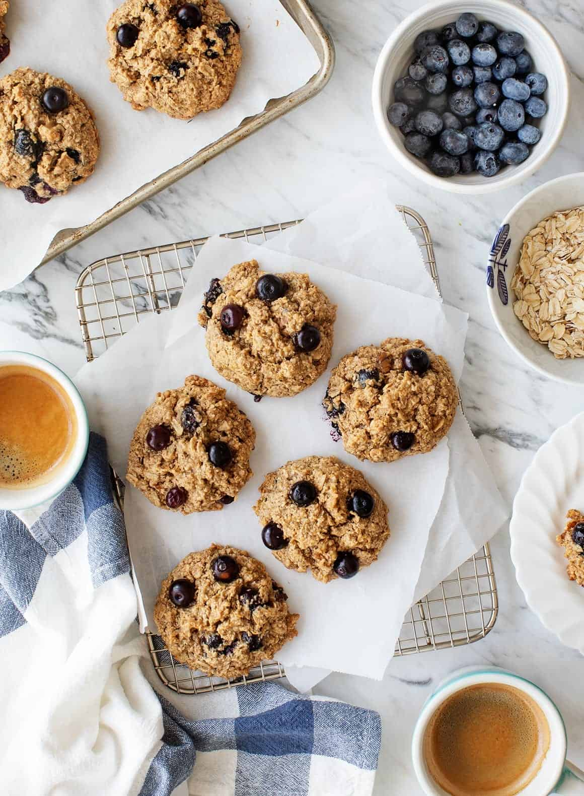

The Little Kitchen
A family food blog with easy, well tasted, family approved recipes!
Dessert Ideas

- Oatmeal Cookies

Ingredients :
- 2 tablespoons ground flaxseed + 5 tablespoons warm water
- 1 cup oat flour, made from 1¼ cups whole rolled oats*
- 1 cup additional whole rolled oats
- ½ cup almond flour
- zest of 1 lemon, about ½ tablespoon
- ½ teaspoon baking powder
- ½ teaspoon baking soda
- ½ teaspoon cinnamon
- ½ teaspoon sea salt
- ½ cup creamy natural almond butter**
- ¼ cup coconut oil, melted
- ½ cup maple syrup
- ⅓ cup walnuts
- ¾ cup fresh blueberries
Instructions :
- Preheat the oven to 350°F and line a large baking sheet with parchment paper.
- In a small bowl, combine the flaxseed and warm water and set aside to thicken for 5 minutes.
- In a large bowl, stir together the oat flour, the additional 1 cup rolled oats, almond flour, lemon zest, baking powder, baking soda, cinnamon, and salt.
- In a medium bowl, combine the almond butter, coconut oil, and maple syrup and stir well to incorporate. Stir in the flaxseed mixture.
- Add the wet ingredients to the bowl of dry ingredients and fold in just until combined. Fold in the walnuts and blueberries.
- Scoop ¼ cup of batter for each cookie onto the baking sheet. Bake 20 to 24 minutes, or until browned around the edges. Cool on the pan for 5 to 10 minutes and then transfer to a wire rack to finish cooling. If you take them off the sheet too soon, the cookies may fall apart.
- When cookies are completely cool, they can be stored in an airtight container or frozen.
- Healthy Banana Muffins
- Pumpkin Bars